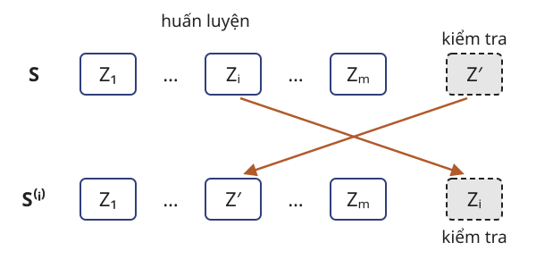
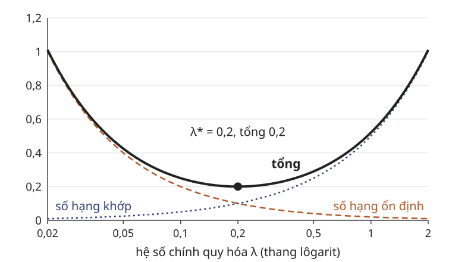

Học bằng hạ gradient ngẫu nhiên, chính quy hóa và tính ổn định
Bài 06
Với hàm lỗi lồi, hạ gradient ngẫu nhiên dùng quan sát mới có cận trực tiếp cho rủi ro vượt mức kì vọng, còn trên tập huấn luyện lưu lại, khi hàm lỗi còn Lipschitz, chính quy hóa chặn khoảng cách tổng quát hóa kì vọng nhờ tính ổn định đều.
Lý thuyết học thống kê · Năm học 2026–2027, học kỳ 1
Khoa Công nghệ thông tin, Trường Đại học Công nghệ, ĐHQGHN
Tiên quyết và quy ước
Nhắc lại: hạ gradient ngẫu nhiên (stochastic gradient descent, SGD) có chiếu (Thuật toán 05.11) trả về điểm lặp trung bình (averaged iterate) $\bar w_T$.
(C) $F$ lồi, $W$ khác rỗng, đóng, lồi; (G1) $\mathbb E_\xi\varphi(w,\xi)\in\partial F(w)$; (G2) $\mathbb E_\xi\lVert\varphi(w,\xi)\rVert^2\le G^2$ trên $W$.
(T1) dạng đầy đủ: độc lập cùng phân bố $D$; dạng yếu: mỗi $Z_i\sim D$.
Chế độ A, quan sát mới: $Z_1,Z_2,\ldots$ theo (T1), dùng một lần.
Chế độ B, tập huấn luyện lưu lại: $S=(Z_1,\ldots,Z_m)\sim D^m$ theo (T1), dùng nhiều lần.
Cần chặn $\mathbb EL_D$ của đầu ra so với $u\in W$ cố định hoặc $\inf_{w\in W}L_D(w)$.
Ví dụ: bốn quan sát và một triệu hồ sơ
Ví dụ 06.1. $z_1=(1,1)$, $z_2=(1,0)$, $z_3=(0{,}5;1)$, $z_4=(-1,-1)$; hàm lỗi bình phương (squared loss), $W=[-1,1]$, $B=C_x=C_y=1$, $G=2(BC_x+C_y)C_x=4$.
$L_S(w)=\tfrac14(3{,}25w^2-5w+3)$; nghiệm tối thiểu hóa rủi ro thực nghiệm (empirical risk minimization, ERM) $2{,}5/3{,}25\approx0{,}7692$.
Một triệu hồ sơ: $m=10^6$, $\lVert x\rVert\le1$, hàm lỗi logistic (logistic loss), $G=1$, quả cầu $\lVert w\rVert\le5$.
Bài 05: $10^4$ bước SGD cho $\mathbb E_\xi\operatorname{opt}_S\le0{,}05$.
Câu hỏi: bảo đảm nào cho $\mathbb EL_D(\bar w_T)-\inf_{\lVert w\rVert\le5}L_D$ khi SGD đi đúng một vòng qua $10^6$ hồ sơ?
Gradient trên một quan sát mới
Nhắc lại: kì vọng có điều kiện theo lịch sử $\mathcal F_{t-1}=\sigma(\xi_1,\ldots,\xi_{t-1})$ (Bài 05); chế độ A: $\xi_t=Z_t$.
Trực quan. $w_t$ chưa thấy $Z_t$, và $Z_t\sim D$ khi biết $\mathcal F_{t-1}$: dưới gradient trên $Z_t$ có trung bình là dưới gradient của $L_D$ tại $w_t$.
Bổ đề 06.1.Giả thiết: $\ell(\cdot,z)\ge0$ lồi, $\ell(w,\cdot)$ đo được, $L_D<\infty$ trên $\mathbb R^p$; $v$ đo được, $v(w,z)\in\partial\ell(\cdot,z)(w)$; tại $w$: $\mathbb E\lVert v(w,Z)\rVert<\infty$.
Hệ quả 06.2.Giả thiết: $Z_1,Z_2,\ldots$ độc lập cùng phân bố $D$; $\ell$, $v$ như Bổ đề 06.1; $G>0$, $\mathbb E_{Z\sim D}\lVert v(w,Z)\rVert^2\le G^2$ trên $W$;
$W$ khác rỗng, đóng, lồi; $w_1\in W$ tất định, $R>0$; Thuật toán 05.11 với $\xi_t=Z_t$, $\varphi=v$, $\eta=R/(G\sqrt T)$.
Bảo đảm: kì vọng lấy theo $Z_1,\ldots,Z_{T-1}$; cấp thuật toán (algorithm-level):
nếu $\lVert w_1-u\rVert\le R$ với mọi $u\in W$: cùng cận cho rủi ro vượt mức kì vọng (expected excess risk) $\mathbb EL_D(\bar w_T)-\inf_WL_D$;
$T\ge R^2G^2/\epsilon^2$ đủ cho mức $\epsilon$.
Ý tưởng chứng minh: hạ gradient ngẫu nhiên với quan sát mới
((T1) dạng đầy đủ) Các $Z_t$ độc lập: $(v,D)$ là oracle gradient ngẫu nhiên với $\xi_t=Z_t$; Bổ đề 06.1(b) cho (G1) với $F=L_D$.
(G2) là cận gradient; Bổ đề 06.1(a) và $W$ khác rỗng, đóng, lồi cho (C).
Hệ quả 05.15 với $F=L_D$, kì vọng theo $\xi_t=Z_t$, $t<T$.
Vòng thứ hai trên tập huấn luyện dùng lại $Z_t$: bước 1 hỏng.
Ví dụ: chương trình dùng quan sát mới
Ví dụ 06.2. Chương trình thứ nhất; $v(w,(1,y))=2(w-y)$, $\lvert v\rvert\le4$ trên $W$: $G=4$; $R=1$; $\eta=R/(G\sqrt T)=1/(4\cdot40)=0{,}00625$.
Hệ quả 06.2(b): $\mathbb EL_D(\bar w_{1600})-1\le0{,}1$, với $1599$ quan sát mới.
$2\eta<1$: $w_{t+1}=(1-2\eta)w_t+2\eta y_t$ là tổ hợp lồi, phép chiếu không tác động; $\bar w_T=\sum_tc_ty_t$, các $c_t$ tất định.
$L_D(w)=w^2+1$, nên $L_D(\bar w_T)-1=\bar w_T^2$; các $y_t$ độc lập, kì vọng $0$: $\mathbb E\bar w_T^2=\sum_tc_t^2\approx0{,}000578$.
Diễn giải: giá trị đúng $0{,}000578$ nhỏ hơn cận $0{,}1$ khoảng $173$ lần.
Một vòng và nhiều vòng qua tập huấn luyện
Nhận xét 06.3. $S\sim D^m$ theo (T1), $T=m+1$, mỗi $Z_i$ dùng một lần theo thứ tự: Hệ quả 06.2 cho $\mathbb E_SL_D(\bar w_{m+1})-\inf_WL_D\le RG/\sqrt{m+1}$.
Một triệu hồ sơ, $w_1=0$, $R=5$: một vòng cho cận $5/\sqrt{10^6+1}\approx0{,}005$.
Từ vòng thứ hai, $w_t$ phụ thuộc quan sát sắp dùng.
Rút chỉ số $i_t$ đều, có hoàn lại từ $S$ ($\xi_t=i_t$), $g_t=v(w_t,Z_{i_t})$: $\mathbb E[g_t\mid S,\mathcal F_{t-1}]\in\partial L_S(w_t)$.
Ví dụ. Chương trình thứ hai, $Z_i=(1,Y_i)$, $\bar Y=\tfrac14\sum_iY_i$: $\mathbb E[g_t\mid S,\mathcal F_{t-1}]=2(w_t-\bar Y)=L_S'(w_t)$, còn $L_D'(w_t)=2w_t$.
Khoảng cách tổng quát hóa kì vọng
Câu hỏi: vì sao cận $\operatorname{opt}_S$ của Bài 05 không chặn $\mathbb EL_D(\bar w_T)$ khi rút từ $S$?
Định nghĩa 06.4. Thuật toán $A(S;\xi)$, $\xi$ độc lập với $S\sim D^m$, (T2), hai kì vọng hữu hạn.
Khoảng cách tổng quát hóa kì vọng (expected generalization gap) với cỡ mẫu $m$:
Ví dụ. $1$ với thuật toán ghi nhớ (memorizing algorithm) $A_{\mathrm{gn}}$ (Ví dụ 01.8); $0{,}5=1{,}25-0{,}75$ với $A(S)=\bar Y$, $Y_i=\pm1$, $m=4$, $\ell(w,y)=(w-y)^2$.
Phân tích rủi ro trên một tập huấn luyện cố định
Trực quan. $u$ cố định nên $\mathbb E_SL_S(u)=L_D(u)$; $\tilde w$ tính từ $S$ nên $L_S(\tilde w)$ không có tính chất này, và hiệu $L_D(\tilde w)-L_S(\tilde w)$ còn lại.
Mệnh đề 06.5.Giả thiết: mỗi $Z_i\sim D$ (dạng yếu của (T1)); $\tilde w=A(S;\xi)\in W$, $\xi$ độc lập với $S$, $\mathbb EL_D(\tilde w),\mathbb EL_S(\tilde w)<\infty$; (T2); $u\in W$ cố định.
ngoặc thứ hai $\le\operatorname{opt}_S(\tilde w)$, ngoặc thứ ba có kì vọng $0$; (b) theo kì vọng: $\mathbb EL_D(\tilde w)-\inf_WL_D\le\mathbb E[L_D(\tilde w)-L_S(\tilde w)]+\mathbb E\operatorname{opt}_S(\tilde w)$.
Ý tưởng chứng minh: phân tích rủi ro
Cộng và trừ $L_S(\tilde w)$, $L_S(u)$, như bước đầu của cận ba thành phần (Mệnh đề 04.3): được đẳng thức (a).
($u\in W$) $L_S(u)\ge\inf_{w'\in W}L_S(w')$, nên $L_S(\tilde w)-L_S(u)\le\operatorname{opt}_S(\tilde w)$.
($u$ không phụ thuộc $S$) Mệnh đề 01.7: $\mathbb E_SL_S(u)=L_D(u)$; chỉ cần mỗi $Z_i$ có phân bố $D$.
Lấy kì vọng, rồi lấy cận dưới đúng theo $u\in W$.
Nếu $u$ được chọn theo $S$, chẳng hạn $u=\tilde w$: bước 3 hỏng.
Ví dụ: chương trình chạy nhiều vòng
Ví dụ 06.3. $S=((1,Y_i))_{i\le4}\sim D^4$; $i_t$ đều, có hoàn lại, độc lập với $S$; $T$, $\eta$ như Ví dụ 06.2.
Mệnh đề 06.5(b), $\inf_WL_D=1$: $0{,}4750+0{,}0011=0{,}4761\ge0{,}2261$.
Diễn giải: $\mathbb E\operatorname{opt}_S\approx0{,}0011$, nhưng rủi ro vượt mức kì vọng $0{,}2261>RG/\sqrt T$.
Vế phải của (b) chủ yếu là khoảng cách tổng quát hóa kì vọng $0{,}4750$; cần cận theo tính chất thuật toán, không qua hội tụ đều.
Bài tập: độ chệch của gradient ở bước thứ hai
Bài tập 06.1. Thiết lập của Ví dụ 06.2 với $\eta\in(0,\tfrac12)$; $Y_j$ là nhãn của $Z_j$, $\bar Y=\tfrac1m\sum_jY_j$.
(c) Chế độ B, $m\ge2$: tính $w_2$, $\mathbb E[g_2\mid S,i_1]$, $\mathbb E[g_2\mid w_2]$, so với $L_D'(w_2)$; tính độ chệch $\mathbb E[g_2\mid w_2]-L_D'(w_2)$ với $m=3$.
(d) Một vòng theo thứ tự, $g_t=2(w_t-Y_t)$: tính $\mathbb E[g_2\mid w_2]$, chỉ ra giả thiết làm độ chệch bằng $0$.
Lời giải: (c) $w_2=2\eta Y_{i_1}$; $\mathbb E[g_2\mid S,i_1]=2(w_2-\bar Y)=L_S'(w_2)$; $\mathbb E[g_2\mid w_2]=2w_2-2y/m$, $y=Y_{i_1}$; độ chệch $-2y/m$: $\mp0{,}667$ khi $m=3$.
(d) $Y_2$ độc lập với $w_2$, nên $\mathbb E[g_2\mid w_2]=2w_2=L_D'(w_2)$: cần tính độc lập đó.
3.ERM có chính quy hóa
Số hạng phạt chuẩn làm nghiệm duy nhất và ít nhạy hơn khi thay một quan sát.
mục tiêu có chính quy hóa · lồi mạnh · tăng trưởng bậc hai · hồi quy ridge
Ví dụ: một quan sát dịch nghiệm ERM
Tính chất của thuật toán cần đo là độ dịch của nghiệm khi thay một quan sát.
Thay $z_4=(-1,-1)$ bằng $z'=(1,-1)$: $\sum_ix_iy_i$ từ $2{,}5$ xuống $0{,}5$; nghiệm mới $0{,}5/3{,}25\approx0{,}1538$, dịch $0{,}6154$, khoảng $0{,}31$ lần đường kính $2$ của $W$.
Nghiệm ERM có thể không duy nhất: $p=2$, $m=1$, $x=(1,0)$, $y=1$, $W=\mathbb R^2$: mọi $w=(1,t)$ có $L_S(w)=0$.
Thêm một số hạng phạt chuẩn vào $L_S$ làm nghiệm ít nhạy hơn.
ERM có chính quy hóa
Định nghĩa 06.6. $W$ khác rỗng, đóng, lồi; $s\in\mathcal Z^m$; hệ số chính quy hóa (regularization parameter) $\lambda>0$ chọn trước khi thấy tập huấn luyện.
Mục tiêu có chính quy hóa (regularized objective) và $\hat w_s\in\arg\min_{w\in W}F_{s,\lambda}(w)$:
(c) Kiểm tra (a) với $f(w)=w^2$ ($\lambda=2$) tại $w=1$, $u=0$; với $f(w)=\lvert w\rvert+w^2$ ($\lambda=2$) tại $w=0$, $v=\tfrac12$, $u=1$.
Lời giải: (a) $w_\alpha=w+\alpha(u-w)$, $\alpha\in(0,1]$: lồi mạnh chặn $f(w_\alpha)$ từ trên, dưới gradient tại $w$ chặn từ dưới; trừ $f(w)$, chia cho $\alpha$, cho $\alpha\to0^+$, đổi dấu.
4.Tính ổn định và khoảng cách tổng quát hóa kì vọng
Khi thay một quan sát chỉ làm hàm lỗi đổi ít, khoảng cách tổng quát hóa kì vọng cũng nhỏ.
mẫu lân cận · ổn định đều · hệ số ổn định · lập luận đổi vai
Mẫu lân cận và tính ổn định đều
ERM, $\lambda=0$, $z_4\to z'=(1,-1)$: hàm lỗi tại $z=(1,-1)$ đổi $304/169\approx1{,}7988$.
Định nghĩa 06.9. Mẫu lân cận (neighboring samples) $s$, $s^{(i)}$: thay $z_i$ bằng quan sát thay thế (replacement observation) $z'$.
$A$ ổn định đều (uniformly stable), hệ số ổn định (stability coefficient) $\epsilon_{\mathrm{stab}}(m)$, nếu với mọi $s$, $i$, $z'$, quan sát kiểm tra (test observation) $z$, các kì vọng hữu hạn và
Với mọi $s\in\mathcal Z^m$, kể cả $s$ có xác suất $0$; ERM ở dòng đầu: $\epsilon_{\mathrm{stab}}(4)\ge1{,}7988$.
Đổi vai quan sát huấn luyện và quan sát mới
Trực quan. $\mathbb EL_D(A(S;\xi))$ là kì vọng hàm lỗi trên $Z'\sim D$, chưa thấy.
Đổi vai $Z_i$ với $Z'$: kì vọng đó bằng kì vọng hàm lỗi của $A(S^{(i)};\xi)$ tại $Z_i$, cũng chưa thấy.
$L_S$ lấy hàm lỗi tại $Z_i$ khi giữ $Z_i$; ổn định đều chặn hiệu giữa hai giá trị.
Ví dụ. $A_{\mathrm{gn}}$, hàm lỗi 0–1: $0$ khi giữ $Z_i$, $1$ khi thay.

$(S,Z')$, $(S^{(i)},Z_i)$ cùng phân bố khi $Z_1,\ldots,Z_m,Z'$ độc lập cùng phân bố.
Tính ổn định chặn khoảng cách tổng quát hóa kì vọng
Định lý 06.10.Giả thiết: $S=(Z_1,\ldots,Z_m)\sim D^m$ theo (T1) dạng đầy đủ; $A$ có nguồn ngẫu nhiên riêng, $\xi$ độc lập với $S$, ổn định đều với hệ số $\epsilon_{\mathrm{stab}}(m)$;
$\ell$ thỏa (T2), không cần bị chặn; $\mathbb E_{S,\xi}L_D(A(S;\xi))<\infty$.
Bảo đảm: kì vọng lấy theo $(S,\xi)$, với $\tilde w=A(S;\xi)$:
Bảo đảm cấp thuật toán: cận không dùng kích thước của lớp giả thuyết, phụ thuộc $m$ chỉ qua $\epsilon_{\mathrm{stab}}(m)$.
Ý tưởng chứng minh: Định lý 06.10
($Z'\sim D$ độc lập với $(S,\xi)$; định lý Fubini) $\mathbb E\,\ell(A(S;\xi),Z')=\mathbb EL_D(A(S;\xi))$.
((T1) dạng đầy đủ) Đổi chỗ $Z_i$, $Z'$ ($S\to S^{(i)}$) giữ phân bố liên hợp: $\mathbb E\,\ell(A(S;\xi),Z')=\mathbb E\,\ell(A(S^{(i)};\xi),Z_i)$.
$\mathbb EL_S(A(S;\xi))=\frac1m\sum_i\mathbb E\,\ell(A(S;\xi),Z_i)$, hữu hạn nhờ ổn định đều; trừ: khoảng cách bằng $\tfrac1m\sum_i\mathbb E[\ell(A(S^{(i)};\xi),Z_i)-\ell(A(S;\xi),Z_i)]$.
(ổn định đều) Nhắc lại: lấy điều kiện rồi bỏ điều kiện (Bài 04). Với $(S,Z')$ cố định, mỗi hiệu có $\lvert\mathbb E_\xi[\cdot]\rvert\le\epsilon_{\mathrm{stab}}(m)$.
$Z_1=\cdots=Z_m$ (mỗi $Z_i\sim D$): bước 2 hỏng.
Lập luận đổi vai
Kỹ thuật. Lập luận đổi vai (exchange argument): $Z_1,\ldots,Z_m,Z'$ độc lập cùng phân bố, $\Phi\ge0$ đo được:
Dùng khi so hàm lỗi trên điểm chưa thấy và điểm đã dùng.
Nhắc lại: đối xứng hóa và mẫu bóng (Bài 03) thêm $m$ quan sát.
Với $\Phi(s,z)=\mathbb E_\xi\ell(A(s;\xi),z)$, $A$ ổn định đều, $\mathbb EL_D(A(S;\xi))<\infty$: khoảng cách tổng quát hóa kì vọng bằng trung bình thay một
Kết luận: tính ổn định không kéo theo rủi ro thấp; $\lvert\mathbb E[L_D-L_S]\rvert=0$, còn $\mathbb E\lvert L_D-L_S\rvert>0$ với mọi $m$.
Bài tập: thuật toán trung bình trên hai điểm
Bài tập 06.2. $\mathcal Z=\{0,1\}$, $D(0)=D(1)=\tfrac12$, $\ell(w,z)=(w-z)^2$, $w\in[0,1]$; $A(s)=\bar z=\tfrac1m\sum_iz_i$.
(b1) $m=2$: liệt kê bốn tập huấn luyện; tính $\mathbb EL_D(A(S))$, $\mathbb EL_S(A(S))$, khoảng cách tổng quát hóa kì vọng, trung bình thay một.
(b2) Chứng minh hệ số ổn định đều nhỏ nhất là $2/m-1/m^2$; so với cận Lipschitz $2/m$.
Lời giải: (b1) $\mathbb EL_D=0{,}375$, $\mathbb EL_S=0{,}125$; khoảng cách $0{,}25$, bằng trung bình thay một.
(b2) $\lvert a-b\rvert\in\{0,1/m\}$: hiệu $\le(2-1/m)/m$, đạt tại $s=(0,\ldots,0)$, $z'=z=1$; $m=2$: hệ số $0{,}75<1$ (cận Lipschitz), khoảng cách $0{,}25\le0{,}75$.
5.Tính ổn định của ERM có chính quy hóa
Với hàm lỗi lồi, Lipschitz, chính quy hóa cho hệ số ổn định giảm theo hệ số chính quy hóa và cỡ mẫu.
ổn định đều · hai mẫu lân cận · tính Lipschitz · dữ liệu bị chặn
Hai nghiệm có chính quy hóa trên hai mẫu lân cận
Định lý 06.10 cần hệ số ổn định nhỏ; Ví dụ 06.4: $\lvert\hat w_S-\hat w_{S^{(4)}}\rvert=0{,}6154\to0{,}1778$ khi $\lambda=0\to4$.
Trực quan. $F_{s,\lambda}-F_{s^{(i)},\lambda}=\tfrac1m[\ell(\cdot,z_i)-\ell(\cdot,z')]$ là $(2G/m)$-Lipschitz; độ cong $\lambda$ giữ điểm cực tiểu dịch cỡ $(2G/m)/\lambda$.
Mệnh đề 06.11.Giả thiết: $W$ khác rỗng, đóng, lồi; $\ell(\cdot,z)$ lồi, không âm trên $W$, (L) với $G$; $\lambda>0$; $s$, $i$, $z'$ tùy ý.
Bảo đảm: (tất định, không cần $D$) (a) $\lVert\hat w_s-\hat w_{s^{(i)}}\rVert\le2G/(\lambda m)$; (b) ổn định đều: với mọi $z$, $\lvert\ell(\hat w_s,z)-\ell(\hat w_{s^{(i)}},z)\rvert\le2G^2/(\lambda m)=\epsilon_{\mathrm{stab}}(m)$.
Ý tưởng chứng minh: Mệnh đề 06.11
(Bổ đề 06.8(c); $\ell$, $W$ lồi, $\lambda>0$) Với $\hat w=\hat w_s$, $\hat w'=\hat w_{s^{(i)}}$: tăng trưởng bậc hai của $F_{s,\lambda}$ tại $\hat w'$, của $F_{s^{(i)},\lambda}$ tại $\hat w$.
Cộng lại; số hạng chính quy hóa và $m-1$ số hạng chung triệt tiêu:
$$\lambda\lVert\hat w-\hat w'\rVert^2\le\tfrac1m[\ell(\hat w',z_i)-\ell(\hat w,z_i)]+\tfrac1m[\ell(\hat w,z')-\ell(\hat w',z')].$$
((L) với $z_i$, $z'$) Vế phải $\le2G\lVert\hat w-\hat w'\rVert/m$: được (a).
((L) với $z$) Được (b).
Kỹ thuật. Cộng hai bất đẳng thức tăng trưởng bậc hai đối xứng; lập luận một phía cho hằng số $4G/(\lambda m)$.
Thay một $z_i=1$ bằng $-1$: hai nghiệm cách đúng $2/(\lambda m)=0{,}2$; khoảng cách tổng quát hóa kì vọng $0{,}1$, cận $0{,}2$.
Ví dụ: bỏ chính quy hóa hoặc bỏ dữ liệu bị chặn
Ví dụ 06.7. $m-1$ bản sao $(0,0)$ và $z_m=(1,1)$, thay $z_m$ bằng $(1,-1)$; $W=[-1,1]$, $G=4$. $\lambda=0$: nghiệm $\pm1$, hàm lỗi tại $(1,1)$ đổi từ $0$ lên $4$ với mọi $m$.
$\lambda=0{,}1$, $m=10;100;1000$: khoảng cách $1{,}3333$; $0{,}3333$; $0{,}0392$, cận $8/(\lambda m)=8$; $0{,}8$; $0{,}08$.
Ví dụ 06.9. $W=\mathbb R$, $\lambda=1$, $m=100$; $S$: $100$ bản sao $(1,1)$; $S^{(100)}$: quan sát cuối thay bằng $(M,0)$.
$\hat w_S\approx0{,}6667$, $\hat w_{S^{(100)}}=99/(149+M^2)$; hàm lỗi tại $(1,1)$ đổi $0{,}0045$; $0{,}2518$; $0{,}8695$ khi $M=1$; $10$; $100$.
Không có $G$ hữu hạn quanh hai nghiệm; với $M=m$, thay đổi không giảm theo $m$.
Bài tập: hồi quy ridge với hệ số chính quy hóa bằng 2
Bài tập 06.6. (a) Lập lại Ví dụ 06.4 với $\lambda=2$: tính $\hat w_S$, $\hat w_{S^{(4)}}$, khoảng cách giữa hai nghiệm và $L_S(\hat w_S)$.
So khoảng cách với cận $2G/(\lambda m)$ của Mệnh đề 06.11. Xếp bốn giá trị $\lambda\in\{0,1,2,4\}$ theo khoảng cách và theo $L_S(\hat w_S)$.
Lời giải: $\hat w_S=2{,}5/7{,}25=10/29\approx0{,}3448$, $\hat w_{S^{(4)}}=2/29\approx0{,}0690$; khoảng cách $8/29\approx0{,}2759$.
Cận $2\cdot4/(2\cdot4)=1$, lỏng khoảng $3{,}6$ lần; $L_S(\hat w_S)\approx0{,}4156$.
$\lambda=0;1;2;4$: khoảng cách $0{,}6154$; $0{,}3810$; $0{,}2759$; $0{,}1778$ giảm; $L_S(\hat w_S)$: $0{,}2692$; $0{,}3390$; $0{,}4156$; $0{,}5123$ tăng.
6.Đánh đổi khớp–ổn định
Hệ số chính quy hóa cân độ khớp với tính ổn định và xác định cỡ mẫu cho mức rủi ro vượt mức kì vọng.
số hạng ổn định · số hạng khớp · bất đẳng thức oracle · cỡ mẫu
Hệ quả 06.13.Giả thiết: $S\sim D^m$ theo (T1); hàm lỗi, $W$ như Mệnh đề 06.11, $\ell(w,\cdot)$ đo được, $L_D(w_0)<\infty$ với một $w_0\in W$; $\lambda>0$ chọn trước khi thấy tập huấn luyện; $u\in W$ cố định.
Bảo đảm: kì vọng lấy theo $S$:
$\mathbb E_SL_D(\hat w_S)-L_D(u)\le2G^2/(\lambda m)+\tfrac\lambda2\lVert u\rVert^2$: số hạng ổn định cộng số hạng khớp;
($u$ cố định) Mệnh đề 06.5(a) theo kì vọng; bước 1 chặn số hạng khớp.
((T1)) Định lý 06.10, Mệnh đề 06.11: số hạng ổn định $\le2G^2/(\lambda m)$, được (a).
Cận dưới đúng theo $u\in W$: được (b).
Nhắc lại: cân hai số hạng (Bài 05), $a/\lambda+b\lambda\ge2\sqrt{ab}$; với $a=2G^2/m$, $b=B^2/2$: $\lambda^*=\sqrt{a/b}$, cận $2GB/\sqrt m$.
$u$ chọn theo $S$: bước 2 hỏng.
Ví dụ: cỡ mẫu theo cận và một triệu hồ sơ
Ví dụ 06.10. Hồi quy ridge, $\lVert x\rVert,\lvert y\rvert\le1$, $W$ quả cầu đơn vị, $m=1600$: $\lambda^*=0{,}2$, cận $0{,}2$. Mức $0{,}1$: ERM có chính quy hóa cần $m\ge6400$, SGD với quan sát mới cần $1599$ quan sát ($T=1600$).
Diễn giải: theo các cận, ERM có chính quy hóa cần khoảng bốn lần số quan sát.

Vế phải của Hệ quả 06.13(a): $G=4$, $m=1600$, $\lVert u\rVert=B=1$.
Bảo đảm theo kì vọng và bảo đảm với xác suất cao
Nhận xét 06.14. Các cận của Bài 06: kì vọng, một thuật toán; Bài 02–04: xác suất ít nhất $1-\delta$, cả lớp.
Nhắc lại: Markov (Bổ đề 02.2): $V\ge0$, $\alpha>0$ thì $\Pr(V\ge\alpha)\le\mathbb EV/\alpha$.
Hệ quả 06.13(c), $W$ quả cầu bán kính $B$: $\Pr_S[L_D(\hat w_S)-\inf_WL_D\ge\epsilon]\le2GB/(\epsilon\sqrt m)$.
$G=4$, $B=1$, $\epsilon=0{,}1$, $\delta=0{,}05$: $m\ge2\,560\,000$, gấp $400=1/\delta^2$ lần $6400$.
Bài tập 06.7 (hàm lỗi trong $[0,1]$): $\lceil\log_2(2/\delta)\rceil$ khối rời nhau, chọn đầu ra tốt nhất trên mẫu xác thực (validation sample).
Bài tập: hệ số chính quy hóa lệch một thừa số
Bài tập 06.4. Hệ quả 06.13(a) với $\lVert u\rVert\le B$: $\mathbb E_SL_D(\hat w_S)-L_D(u)\le Q(\lambda)$, $Q(\lambda)=\frac{2G^2}{\lambda m}+\frac{\lambda B^2}2$.
(b) Với $\lambda=c\lambda^*$ và $c>0$, chứng minh $Q(c\lambda^*)=Q(\lambda^*)\cdot\tfrac12(c+1/c)$. Tính thừa số $\tfrac12(c+1/c)$ với $c=2$, $c=\tfrac12$ và $c=10$.
Lời giải: $\frac{2G^2}{c\lambda^*m}=\frac{GB}{c\sqrt m}$ và $\frac{c\lambda^*B^2}2=\frac{cGB}{\sqrt m}$; tổng $\frac{GB}{\sqrt m}(c+\tfrac1c)=Q(\lambda^*)\cdot\tfrac12(c+\tfrac1c)$.
$c=2$ và $c=\tfrac12$: $1{,}25$; $c=10$: $5{,}05$. Lệch thừa số $2$: cận tăng $25\%$; lệch thừa số $10$: cận gấp $5{,}05$ lần.
7.Tổng kết
Mỗi bảo đảm đến từ quan sát mới hoặc từ phân tích rủi ro cộng tính ổn định đều, và hỏng khi bỏ giả thiết.
Bảng tổng kết
Kết quả
Giả thiết không được bỏ
Ý tưởng chứng minh
Hệ quả 06.2, kì vọng theo $Z_1,\ldots,Z_{T-1}$: $\mathbb EL_D(\bar w_T)-L_D(u)\le RG/\sqrt T$
Mệnh đề 06.5, kì vọng theo $(S,\xi)$: $\mathbb EL_D(\tilde w)-\inf_WL_D\le\mathbb E[L_D(\tilde w)-L_S(\tilde w)]+\mathbb E\operatorname{opt}_S(\tilde w)$
mỗi $Z_i\sim D$; $\xi$ độc lập với $S$; $u\in W$ cố định
cộng và trừ $L_S$
Bảng tổng kết (tiếp)
Kết quả
Giả thiết không được bỏ
Ý tưởng chứng minh
Định lý 06.10, kì vọng theo $(S,\xi)$: $\lvert\mathbb E[L_D-L_S]\rvert\le\epsilon_{\mathrm{stab}}(m)$
(T1) dạng đầy đủ; $\xi$ độc lập với $S$; ổn định đều
$\ell(\cdot,z)$ lồi, không âm; (L); $\lambda>0$; $W$ đóng, lồi
hai tăng trưởng bậc hai
Hệ quả 06.13, kì vọng theo $S$: $\mathbb E_SL_D(\hat w_S)-\inf_{W_B}L_D\le2GB/\sqrt m$ với $\lambda=\lambda^*$
như Mệnh đề 06.11; (T1); $\lambda$ chọn trước khi thấy tập huấn luyện
ba kết quả trên; cân hai số hạng
Vấn đề trung tâm
Tối ưu là học khi gradient ngẫu nhiên không chệch cho $L_D$, hoặc khi khoảng cách tổng quát hóa kì vọng và $\mathbb E\operatorname{opt}_S$ cùng nhỏ.
$\mathbb EL_D(\bar w_T)-1$: $0{,}0006$ với quan sát mới, $0{,}2261$ khi dùng lại $S$;
ERM có chính quy hóa, $\ell$ lồi, không âm, (L), (T1), $\lambda^*$ chọn trước: $\mathbb E_SL_D(\hat w_S)-\inf_{W_B}L_D\le2GB/\sqrt m$;
SGD nhiều vòng: cần hệ số ổn định của chính SGD; mạng nơ-ron: hàm lỗi không lồi.
Bài tập: đoán sai chuẩn của điểm so sánh
Bài tập 06.4. $Q(\lambda)=\frac{2G^2}{\lambda m}+\frac{\lambda B^2}2$; (a) chọn $\lambda=2G/(B\sqrt m)$.
(c) Hồi quy logistic, $\lVert x\rVert\le4$, $W=\mathbb R^p$: gradient của hàm lỗi có chuẩn không quá $\lVert x\rVert$ (Ví dụ 05.9), nên (L) đúng với $G=4$; $m=1600$.
Hệ số chọn theo (a) với $B_0=1$, còn điểm so sánh có chuẩn $B=2$. Viết $Q$ tại hệ số đó theo $G$, $m$, $B_0$, $B$, tính giá trị, so với $Q(\lambda^*)$ khi $B=2$.
Tính $\epsilon_{\mathrm{stab}}$ của Mệnh đề 06.11 tại hai hệ số.